Next: Calculation of the Correlation Up: Dynamical Susceptibility and Excitations Previous: Dynamical Susceptibility and Excitations Contents Index
The central problem in applying the MF-RPA is the calculation of the
dynamical susceptibility
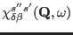
from equation (226).
The standard procedure is to substitute equation (227)
into (226), which is
then solved for each desired value of  and
and  by a matrix
inversion. In order to avoid a numerical divergence,
it is necessary to add to
by a matrix
inversion. In order to avoid a numerical divergence,
it is necessary to add to  a small imaginary
constant
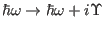 and insert this into
equation (227) leading to a susceptibility which is equivalent to
equation (220).
This method is inefficient and time demanding, however , because a
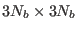 matrix has to
be inverted for each 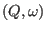 in the calculation.
a small imaginary
constant
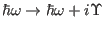 and insert this into
equation (227) leading to a susceptibility which is equivalent to
equation (220).
This method is inefficient and time demanding, however , because a
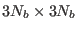 matrix has to
be inverted for each 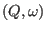 in the calculation.
In order to minimise the computational
effort an algorithm was developed [67], which requires only the solution
of a single generalised eigenvalue problem at each scattering vector  .
This dynamical matrix diagonalisation (DMD) resembles the standard approach
to lattice dynamics.
This approach is very fast and will allow for more complex
systems to be investigated29.
.
This dynamical matrix diagonalisation (DMD) resembles the standard approach
to lattice dynamics.
This approach is very fast and will allow for more complex
systems to be investigated29.
In the following we describe the DMD
for a single excitation
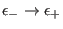
of each
subsystem  , i.e.
we assume that each subsystem is a two level system
with a single transition only.
Other transitions
(terms in equation (227))
can be considered in the DMD formalism
by assigning
to each of these transitions an additional value
of the index
, i.e.
we assume that each subsystem is a two level system
with a single transition only.
Other transitions
(terms in equation (227))
can be considered in the DMD formalism
by assigning
to each of these transitions an additional value
of the index  and increasing the total number
of subsystems (
and increasing the total number
of subsystems ( ) correspondingly. This
procedure is different from adding other terms
(which are present in equation (227))
to the right hand side of equation (229).
However, both procedures lead to the same results,
this is shown in [35].
) correspondingly. This
procedure is different from adding other terms
(which are present in equation (227))
to the right hand side of equation (229).
However, both procedures lead to the same results,
this is shown in [35].
For readability it is convenient to adopt the following
matrix notation: a  matrix is indicated by
a bar on top of the symbol, e.g.
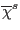
refers to the matrix
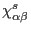 with
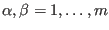. A
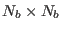 matrix is
denoted by a bar below the symbol.
Making use of these two conventions
the dynamical susceptibility
matrix is indicated by
a bar on top of the symbol, e.g.
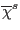
refers to the matrix
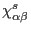 with
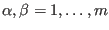. A
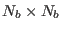 matrix is
denoted by a bar below the symbol.
Making use of these two conventions
the dynamical susceptibility
 can be
written as
can be
written as
 .
.
Considering only a single excitation in the subsystem susceptibility, equation (227) can be rewritten as
with 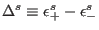 and the transition element matrix
Note for experts on programming single ion modules: that any external single ion module has to provide the
matrix
 for every transition
for every transition
 which is to be taken into consideration in the calculation. If the energy of this transition
is zero, i.e. 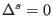 (diffuse scattering), the expression (230) would be zero because
which is to be taken into consideration in the calculation. If the energy of this transition
is zero, i.e. 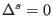 (diffuse scattering), the expression (230) would be zero because  vanishes.
In this case the single ion module should calculate
vanishes.
In this case the single ion module should calculate  instead of
instead of  .
.
The  matrices
matrices
 may be diagonalised giving eigenvalues which are all zero
except for one
real eigenvalue
may be diagonalised giving eigenvalues which are all zero
except for one
real eigenvalue  (which has the same sign as ):
(which has the same sign as ):
| 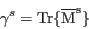 | (218) |
Now, the MF-RPA problem (225) may be simplified by using
the unitary transformation
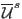 (
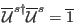),
which diagonalises
 .
Note that the first column of this matrix
.
Note that the first column of this matrix
 (the eigenvector with the
eigenvalue
(the eigenvector with the
eigenvalue  ) is simply
) is simply
This property is useful as most of the equations below require
only knowledge of this first column. Following the
procedure outlined in [67] one may transform
the subsystem interaction
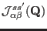
Now the Hermitian dynamical matrix may be defined as
| 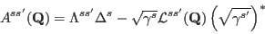 | (221) |
The energies of the system may be calculated by solving the following generalised eigenvalue problem:
where the matrix is defined as
The solution of the generalised eigenvalue problem (235) yields
the eigenvectors
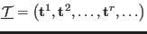 and eigenvalues
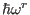.
These may be written as the eigenvalue matrix
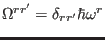, and correspond
to the excitation energies of the system at the wavevector
 for which
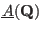 was calculated.
The solution of the eigenvalue problem (235) corresponds to the
diagonalisation of the dynamical matrix in the case of phonons and therefore this method for calculating magnetic
excitations is called dynamical matrix diagonalisation (DMD).
Note, that the matrix
does not change
when the number of dimensions
for which
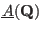 was calculated.
The solution of the eigenvalue problem (235) corresponds to the
diagonalisation of the dynamical matrix in the case of phonons and therefore this method for calculating magnetic
excitations is called dynamical matrix diagonalisation (DMD).
Note, that the matrix
does not change
when the number of dimensions  of the subsystem susceptibility is increased (for example to include quadrupolar degrees
of freedom), unless there is an interaction coupling these degrees of freedom between different ions (this can be seen
by the definition (233) of the matrix
having in mind the first column of the
transformation
matrices
of the subsystem susceptibility is increased (for example to include quadrupolar degrees
of freedom), unless there is an interaction coupling these degrees of freedom between different ions (this can be seen
by the definition (233) of the matrix
having in mind the first column of the
transformation
matrices
 , see equation (232)).
, see equation (232)).
The eigenvector matrix
 provides a
unitary transformation, which may be used to obtain the
dynamical susceptibility.
If the eigenvectors are normalised as
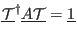, then
equation (226) may be transformed using
provides a
unitary transformation, which may be used to obtain the
dynamical susceptibility.
If the eigenvectors are normalised as
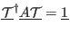, then
equation (226) may be transformed using
 and
and
 (see [35]):
(see [35]):
By its definition the generalised susceptibility gives information about the correlated
movement of the operators
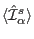
for a specific excitation and contains the relative phases and amplitudes of the
different operators.
The procedure for the calculation of excitation energies and physical
observables (such as correlation functions and spectra) outlined above is very fast, because it
involves only a single diagonalisation (determination of the
matrix
 ) for every scattering
vector of interest. The
dynamical susceptibility does not need to be calculated for each
energy transfer by inverting equation
(225) saving much
computation time. Therefore the module McDisp of the McPhase package
uses this method by default. We want to emphasize, that the procedure outlined in this section is general
and allows to treat any number and combination of multipolar interactions just by
letting the index
) for every scattering
vector of interest. The
dynamical susceptibility does not need to be calculated for each
energy transfer by inverting equation
(225) saving much
computation time. Therefore the module McDisp of the McPhase package
uses this method by default. We want to emphasize, that the procedure outlined in this section is general
and allows to treat any number and combination of multipolar interactions just by
letting the index  in
in
 take values between 1 and the number
of multipolar operators considered (
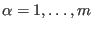).
take values between 1 and the number
of multipolar operators considered (
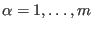).
Figure 27 illustrates the DMD algorithm. We have described the first three parts
shown in the figure, obtaining the eigenvectors 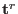
and eigenvalues  . The following
parts are described in the next section where the
dynamical susceptibility
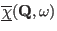
is used to calculate a general susceptibility
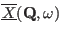 corresponding
to an arbitrary observable, from which physical properties may be calculated.
. The following
parts are described in the next section where the
dynamical susceptibility
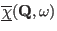
is used to calculate a general susceptibility
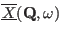 corresponding
to an arbitrary observable, from which physical properties may be calculated.